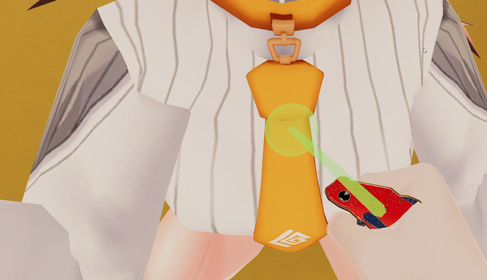

ピンバッジをワールドに設置するガイド
ご購入ありがとうございます！このガイドは、自分のVRChatワールドにピンバッジを置いて、来た人が掴んでアバターに付けて遊べるようにする方法です。読みたいところから開いてください。

掴んで体に近づけると緑のマーカーが出て、その位置に“ペタッ”と装着できます🧷 「自分のアバターに身につけたい」方は、アバターに付けるガイドをご覧ください。
ご購入ありがとうございます！このガイドは、自分のVRChatワールドにピンバッジを置いて、来た人が掴んでアバターに付けて遊べるようにする方法です。読みたいところから開いてください。

掴んで体に近づけると緑のマーカーが出て、その位置に“ペタッ”と装着できます